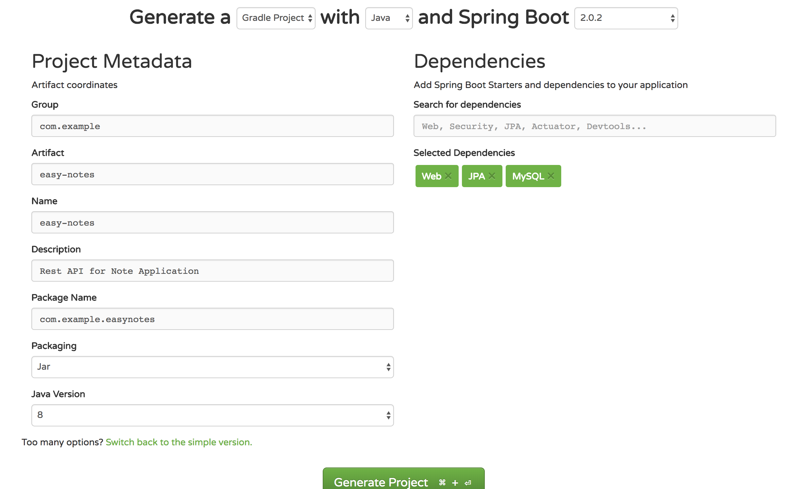
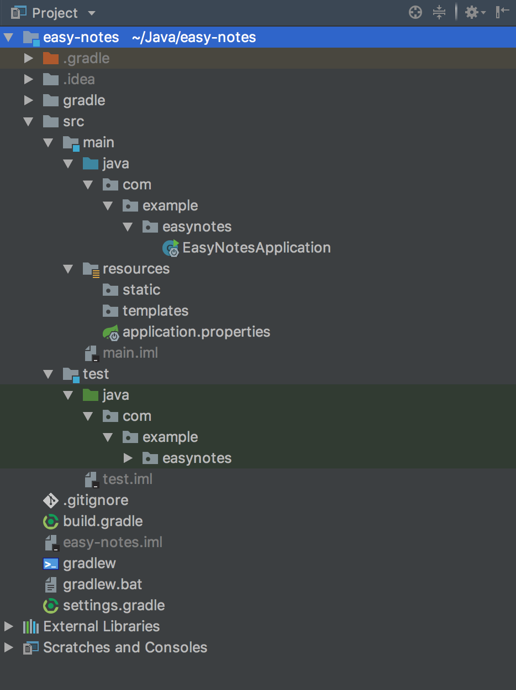
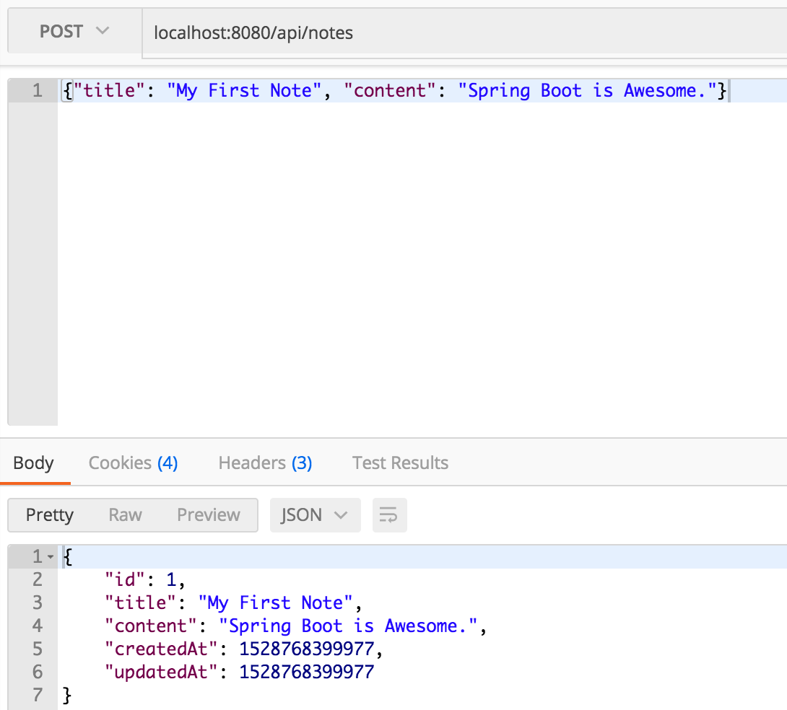
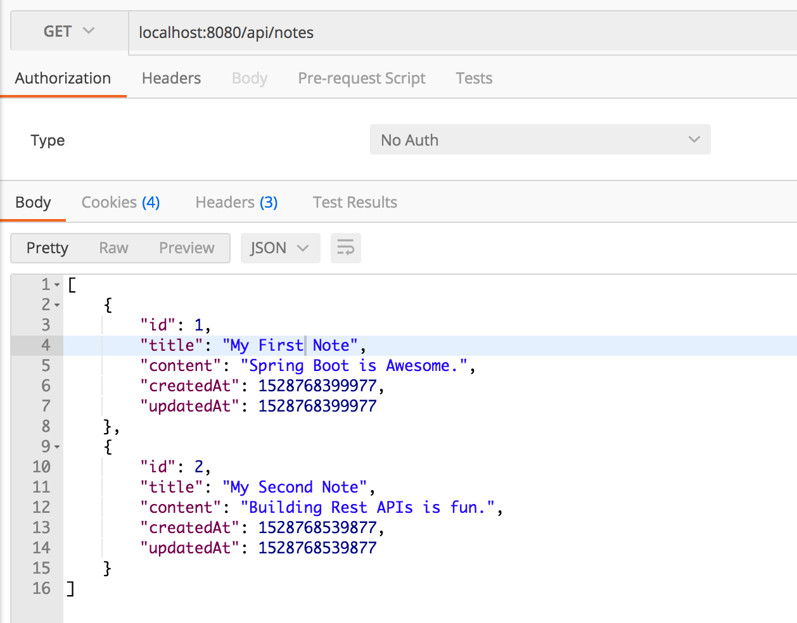
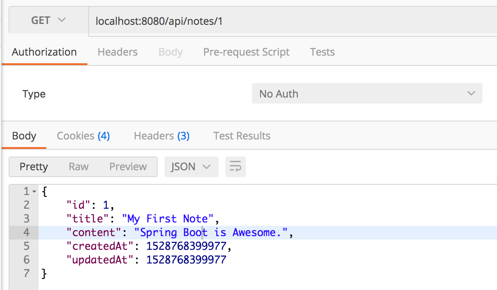
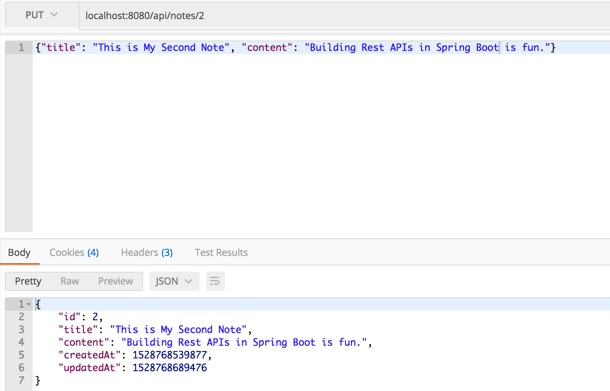
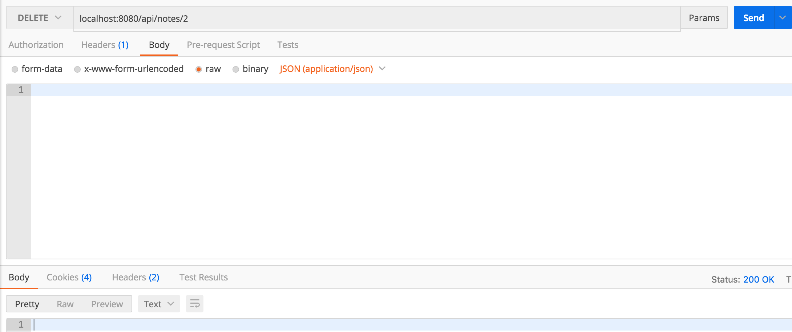

Spring Boot 将 Spring 框架提升了一个新的水平，极大地缩短了 Spring 项目的配置与设置的时间。你几乎可以零配置的开始一个项目并构建你真正关心的部分。
我将通过一个记事本应用来演示一下 JPA 的使用，一篇笔记有标题和内容。我们先来编写增、删、改、查接口，然后使用 postman 来进行测试。
创建项目
Spring Boot 提供一个 web 工具叫做 Spring Initializer 来引导一个应用。访问 http://start.spring.io 然后按照下边的步骤来生成一个新的项目：
- 点击页面上的 Switch to full version
- 输入如下详情
- Group: com.example
- Artifact: easy-notes
- Name: easy-notes
- Description: Rest API for Note Application
- Package Name: com.example.easynotes
- Packaging: jar
- Java Version: 1.8
- Dependencies: Web,JPA,MySQL
输入完所有详情后，将上边的 Generate a 改为 Gradle Project 点击 Generate Project 来生成并下载项目。Spring Initializer 将根据你输入的信息生成项目并提供一个 zip 包含所有项目目录。下一步解压下载下来的 zip 文件，并将导入到你喜欢的 IDE 中。

探索目录结构
下边是我们记事本程序的目录结构

让我们来理解几个重要文件和目录的详情
EasyNotesApplication
这是我们 Spring Boot 应用的主要入口。
1 | package com.example.easynotes; |
它包含一个名为 @SpringBootApplication 的简单注解，这个注解是以下 Spring 注解的组合：
- @Configuration：任何使用了
@Configuration注解的类都由 Spring 引导，并且也被视为其他 bean 定义的来源。 - @EnableAutoConfig：这个注解告诉 Spring 根据你在
build.gradle文件中添加的依赖来自动配置你的应用。
比如，如果spring-data-jpa位于 classpath 中，它会通过从application.properties文件中读取数据库属性来自动尝试配置一个 DataSource。 - @ComponentScan：它告诉 Spring 扫描并引导当前包（com.example.easynotes）和全部子包中定义的其他组件。
main() 方法调用 Spring Boot 的 SpringApplication.run() 方法启动这个应用。
resources/
顾名思义，这个目录用于存放所有静态资源、模板和属性文件。
- resources/static 包含静态资源，如 css、js 和图片
- resources/templates 包含由 Spring 渲染的服务端模板
- resources/application.properties 这个文件非常重要，它包含应用范围的属性，Spring 读取这个文件中定义的属性来配置你的应用，你可以在这个文件中定义服务器默认端口、服务器上下文路径、数据库 URL 等
可以参考此页面来了解 Spring Boot 中常用的应用属性。
EasyNotesApplicationTests
在这里定义单元测试和集成测试
build.gradle
包含所有项目依赖
配置 MySQL 数据库
如果 spring-data-jpa 位于 classpath 中，Spring Boot 会尝试从 application.properties文件中读取数据库配置自动配置 DataSource。所以我们只需要添加配置，Spring Boot 将负责其他部分。
我更习惯于使用 yml 的方式管理配置，所以我们将 application.properties 删掉，新建名为 application.yml 的文本文件。
1 | # Spring 数据源 (DataSourceAutoConfiguration & DataSourceProperties) |
我们需要在 MySQL 中创建一个名为 notes_app 的数据库并将配置文件中的 username 和 password 属性改为你安装的 MySQL 对应的值。
spring.jpa.properties.hibernate.dialect 和 spring.jpa.hibernate.ddl-auto 这两个配置是提供给 hibernate 的，Spring Boot 使用 Hibernate 作为默认 JPA 实现。
spring.jpa.hibernate.ddl-auto 配置用于数据库初始化，我使用 update 值作为属性。
它做了两件事：
- 当你定义一个领域模型，将自动在数据库中创建一个表，并将领域模型的字段映射到表中的对应列。
- 对领域模型的任何修改将触发表的更新。例如，如果你修改一个字段的名称或类型或者将其他字段添加到模型中，所有这些修改也会反映在映射表中。
对于 spring.jpa.hibernate.ddl-auto 属性来说使用 update 值对于开发阶段来说非常好，但是对于生产阶段，应该保留这个属性值为 validate，并使用数据库迁移工具来管理数据库结构的修改，如 Flyway。
创建 Note 模型
接下来创建 Note 模型，我们 Note 模型有如下字段：
id：自增主键title：笔记的标题（非空字段）content：笔记的内容（非空字段）createAt：笔记的创建时间updateAt：笔记的更新时间
现在来看一下如何在 Spring 中对它进行建模。在 com.example.easynotes 创建一个名为 model 的包，并添加一个名为 Note.java 的类，内容如下：
1 | package com.example.easynotes.model; |
- 你所有的域模型必须使用
@Entity进行注解，他用于将该类标记为持久 Java 类 @Table注解用于提供此实体将映射到表的详细信息@Id注解用于定义主键@GeneratedValue注解用于定义主键生成策略，上例中我们声明主键是一个自增字段@NotBlank注解用于验证被注释的字段不为 null 或 空@Column注解用于定义被映射到注解字段列的属性，可以定一个多个属性如名称、长度、可为空、可更新等默认情况下，名为 createAt 的字段将映射到数据库表中名为
create_at的列，即所有驼峰命名将使用下划线替代，如果你想映射这个字段到不同的列，可以使用以下命令指定它：1
2@Column(name = "created_on")
private String createdAt;@Temporal注解与java.util.Date和java.util.Calendar类一起使用，它将 Java 对象中的时间和日期转换为兼容数据库的类型，反之亦然。@JsonIgnoreProperties注解是一个 Jackson 注解，Spring Boot 使用 Jackson 在 Java 对象和 JSON 直接进行序列化和反序列化
使用这个注解是因为我们不希望客户端通过 rest api 提供 createdAt 和 updatedAt 的值，如果它们提供这些值，我们会简单忽略他们，但是我们将在 JSON 响应中包含这些值。
开启 JPA 审计
在 Note 模型中，我们分别用 @CreatedDate 和 @LastModifiedDate 注解标注了 createdAt 和 updatedAt 字段。现在我们想要的效果是只要我们创建或更新实体，这些字段会自动填充。
为了做到这一点，我们要做两件事：
添加 Spring Data JPA 的
AuditingEntityListener到领域模型中
我们已经在 Note 模型中使用注解@EntityListeners(AuditingEntityListener.class)来完成了这个工作在主应用程序中开启 JPA 审计
打开EasyNotesApplication.java并添加@EnableJpaAuditing注解。
1 |
|
创建 NoteRepository 访问来自数据库的数据
接下来我们要做的是创建一个仓库来访问数据库中的 Note 数据。
Spring Data JPA 让我们覆盖这里，它带有一个 JpaRepository 接口，该接口定义了实体上所有 CURD 操作的方法，JpaRepository 的默认实现为 SimpleJpaRepository。
现在来创建仓库，首先在 com.example.easynotes 下创建一个名为 repository 的包，然后创建一个名为 NoteRepository 的接口并从 JpaRepository 扩展它：
1 | package com.example.easynotes.repository; |
请注意我们使用 @Repository 注解标注了接口，这会告诉 Spring 在组件扫描期间引导这个仓库。
以上这些就是你在仓库层所要做的所有工作了，你现在可以使用像 save()、findOne()、findAll()、count()、delete() 等 JpaRepository 方法。
你不需要实现这些方法，他们已经由 Spring Data JPA 的 SimpleJpaRepository 实现，这个实现在运行时被 Spring 自动插入。
查看 SimpleJpaRepository 文档 中提供的所有方法。
创建自定义业务异常
我们将在后边定义 Rest API 用来创建、检索、更新和删除笔记。API 会在数据库找不到具有指定 ID 的笔记时抛出 ResourceNotFoundException 异常。
以下是 ResourceNotFoundException 的定义，我们在 com.example.easynotes 中创建一个名为 exception 的包来存放这个异常类。
1 | package com.example.easynotes.exception; |
注意，上边的异常类使用了 @ResponseStatus 注解，在你的 Controller 中抛出此异常时，Spring boot 会相应指定的 HTTP 状态码。
创建 NoteController
最后一步，我们将编写 REST API 来创建、检索、更新和删除笔记。
首先在 com.example.easynotes 中创建一个新的包 controller，然后创建一个新的类 NoteController.java 内容如下
1 | package com.example.easynotes.controller; |
@RestController 注解是 Spring 中 @Controller 和 @ResponseBody 注解的组合。
@Controller 注解用于定义一个控制器，@ResponseBody 注解用来表示方法的返回值应该用作请求的响应体。
@RequestMapping("/api") 声明这个控制器中所有 api 的 URL 将以 /api 开头。
接下来我们来一个一个实现这些 api。
1.获取所有笔记（GET /api/notes）
1 | // Get All Notes |
上边的方法非常简单，它调用 JapRepository 的 findAll() 方法来检索数据库中所有的笔记并返回整个列表。
另外，@GetMapping("/notes") 注解是 @RequestMapping(value="/notes", method=RequestMethod.GET) 的简写形式。
2.创建一个新的笔记（POST /api/notes）
1 | // Create a new Note |
@RequestBody 注解用于将请求体与方法参数绑定。
@Valid 注解确保请求体是有效的，记不记得我们在 Note 模型中用 @NotBlank 注解标记了 Note 的 title 和 content。
如果请求体中没有 title 或 content，Srping 将向客户端返回 400 BadRequest 错误。
3.获取单个笔记（GET /api/notes/{noteId}）
1 | // Get a Single Note |
顾名思义，@PathVariable 注解用于将路径变量与方法参数绑定。
在上面的方法中，只要没找到指定 ID 的笔记，我们就抛出一个 ResourceNotFoundException 异常。
这将导致 Spring Boot 向客户端返回一个 404 Not Found 错误（我们已经为 ResourceNotFoundException 类添加了 @ResponseStatus(value=HttpStatus.NOT_FOUND) 注解）。
4.更新笔记（PUT /api/notes/{noteId}）
1 | // Update a Note |
5.删除笔记（DELETE /api/notes/{noteId}）
1 |
|
运行应用
我们已经成功为我们的应用程序构建了所有的 api，现在运行该应用并测试 api。
在你的 IDE 中直接运行 EasyNotesApplication 类即可，应用将使用 Spring Boot 的默认 tomcat 端口启动。
接下来我们使用 postman 来测试我们的 api。
测试 API
使用 POST /api/notes 创建一个新的笔记

使用 GET /api/notes 检索全部笔记

使用 GET /api/notes/{noteId} 检索单个笔记

使用 PUT /api/notes/{noteId} 更新一个笔记

使用 DELETE /api/notes/{noteId} 删除一个笔记
